Software Systems Engineering is the branch of Engineering which is concerned with the development of Software Systems and their life-cycles. A Software System can be comprised of Software (e.g. programs, code), Hardware (e.g. computers, smart phones), and development artifacts (e.g. diagrams, documentation). While most students primarily focus on developing software, you will get exposure to math, natural sciences, computer science, and electronics. Essentially you will learn to solve engineering problems by developing software as the primary component (but not only component) of the solution. Example areas of study include networks, artificial intelligence and machine learning, embedded systems, desktop and web applications, and game development. Software Development Life-cycles include the requirements, planning, design, development, testing, deployment, maintenance and decommissioning of these systems.
What is Engineering - Software Systems Engineering - Exercise
University of Regina - Engineering and Applied Science - Software Systems Engineering
Lab Instructor: Adam Tilson
When a Web Browser (e.g. Firefox, Chrome) connects to a website, it connects over the internet to a server, and requests that site’s content. The server replies by sending along all of the types of files needed to properly render that website. These primarily consist of HTML, CSS, and JavaScript. Once the files have been returned to your browser, they exist on your computer, and can be read and modified using your browser’s developer tools. In this exercise we will update a live website with some fake content, which might fool a passerby.
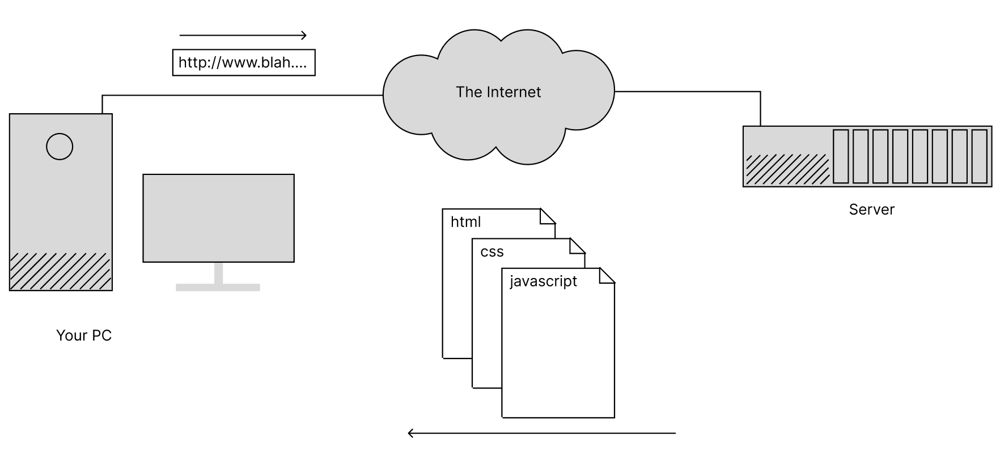
Please log in to the computer, open up the FireFox Web Browser, and browse to a news article. I am going to use the “Game of the Year” Award notification here, those these general principles will apply to any website.
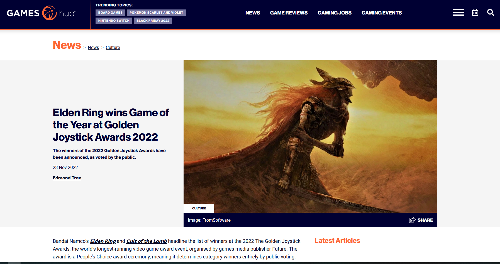
Let’s say, having died to Melania one too many times, we are unhappy with this decision, when we all know the real GOTY is Pokemon Scarlet and Violet. Let’s update the site!
The building blocks of websites is HTML. If you think of a website like a house, this is the floor-plan - which rooms go where and what basic functionality do these rooms serve (kitchen, bathroom, etc.). In other worlds, HTML elements give the basic layout and functionality of the website. The syntax of an HTML tag is:
<tag>text</tag>
However, some tags also need attributes to function correctly.
<tag attr="hello">text</tag>
Though not all tags strictly follow these rules.
Let’s modify the heading of our site using the inspector. You can bring up the developer tools on Firefox with F12:
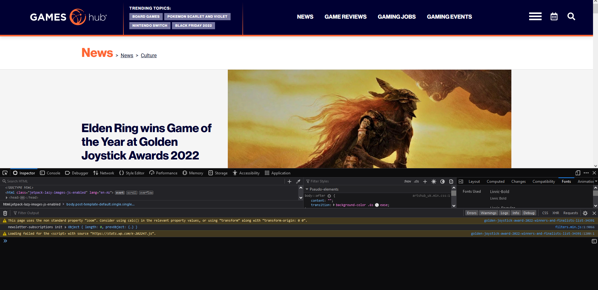
We’ll grab the inspector here:
And select the title by clicking on it:
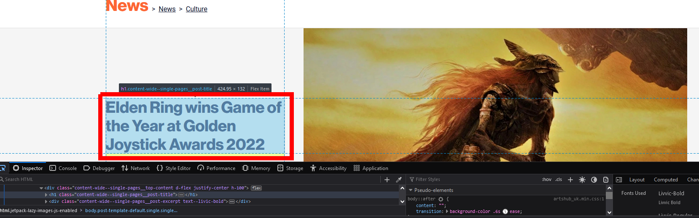
Notice that the upper left pane is now highlighting <div class=header...>. This is the component which contains our code.
We can get a bit more space to work by closing the error console:
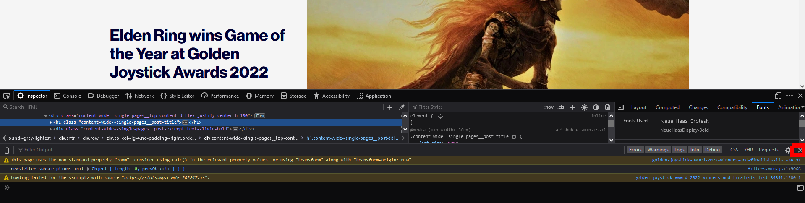
Part of the HTML content is being collapsed. Let’s reveal that content by clicking the little arrow next to the div…
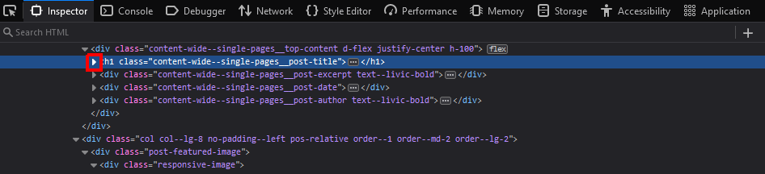
There’s our title!
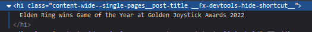
We can actually double click on this title text and modify it:
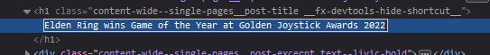
Let’s change it to the true GOTY:
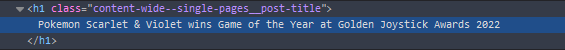
Hit enter, and the page will update:
But… now the image really doesn’t fit with the article. We need to find an appropriate image to replace Malenia.
Let’s see if Ninty can help us. Browse to the Pokemon Scarlet and Violet shop site:
Scarlet and Violet on the Switch store
There’s a nice image there… how can we use it?
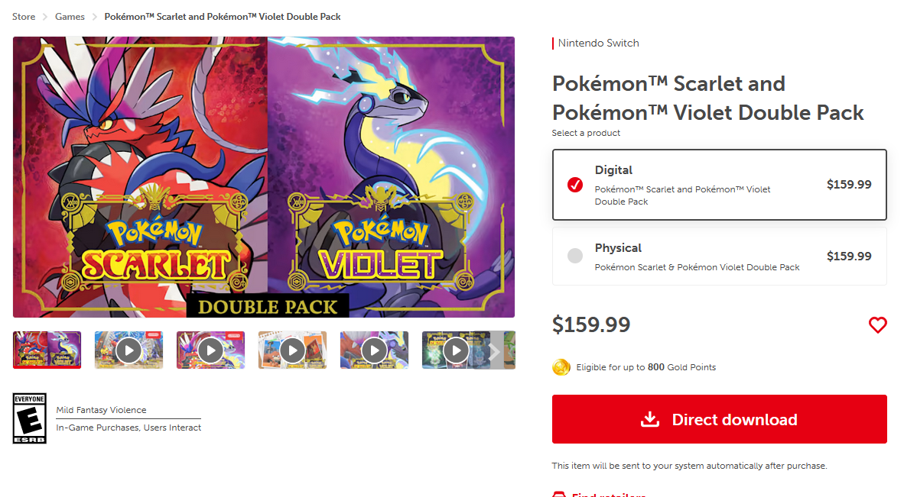
Let’s right click it and Copy Image Link.
If you paste this into your browser bar, this will take you directly to the image.
Cool, let’s see if we can replace Malenia with this image:
Grab the image with the inspector. You will see a massive element:
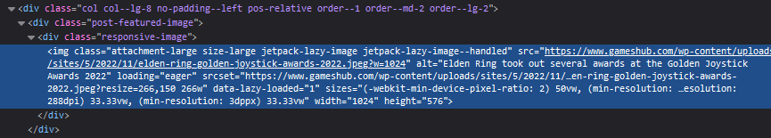
Now we can see in the attributes, there’s a few places where image URLs are, there’s the src attribute as well as srcset. These provide a link to the image. Let’s replace everything inside the “‘s of both of these attributes with our newly copied image:
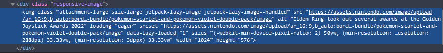
If you successfully updated both, you should see…
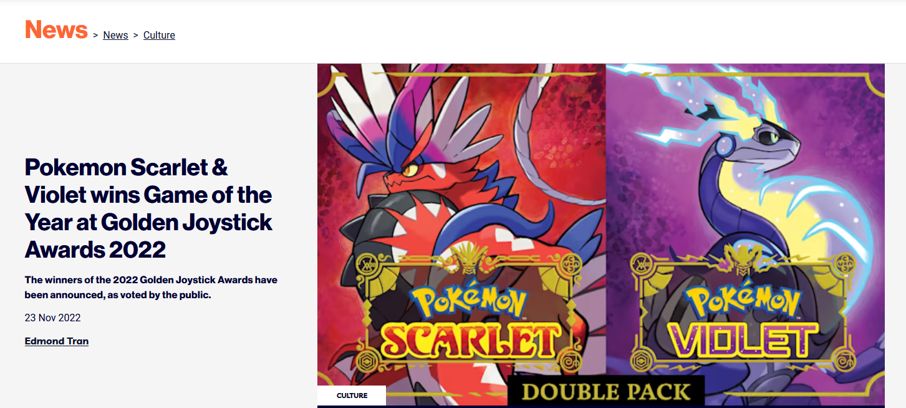
That’s the basics of modifying HTML. Poke around and see if you can modify any other text to make your edit more convincing, for example, changing “FromSoftware” to “Game Freak”, etc.
The second type of file that is given from the server to the browser to render websites properly is CSS. In our analogy of building a house, CSS is like the interior decoration. In other words, CSS is used to style your website to make it look the way it does.
The basic syntax of a CSS style is:
selector {
property: value;
}
Let’s say that the reviewers were so in love with Scarlet and Violet, so much that they even wanted to change the background of the web-page to match these colors! Let’s try to modify the CSS to make the background Scarlet!
Using out selector again, select the background:
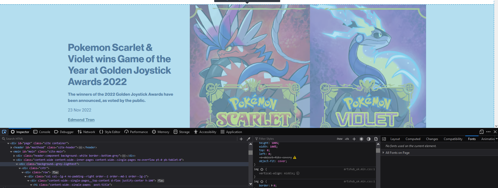
This time, we need to look in the second column, which has all of our styles…
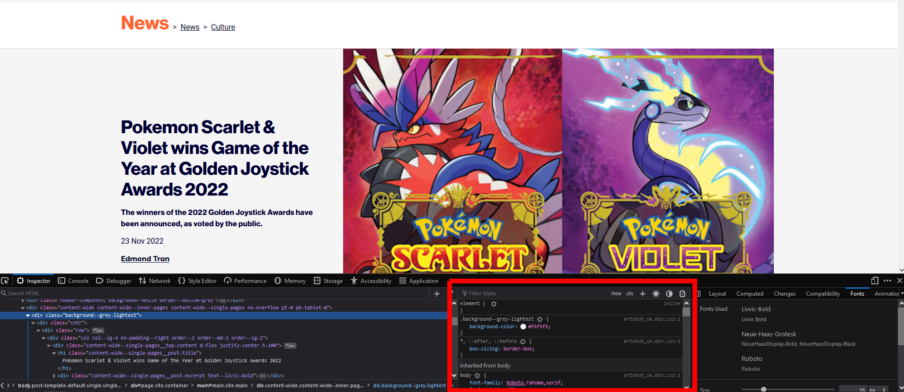
We can see listed part way down, a background-color property. Click the little color orb by it:
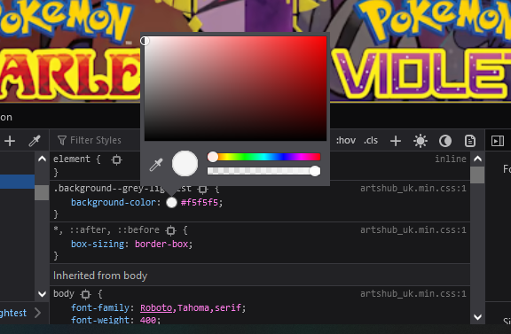
And choose a nice Scarlet color:
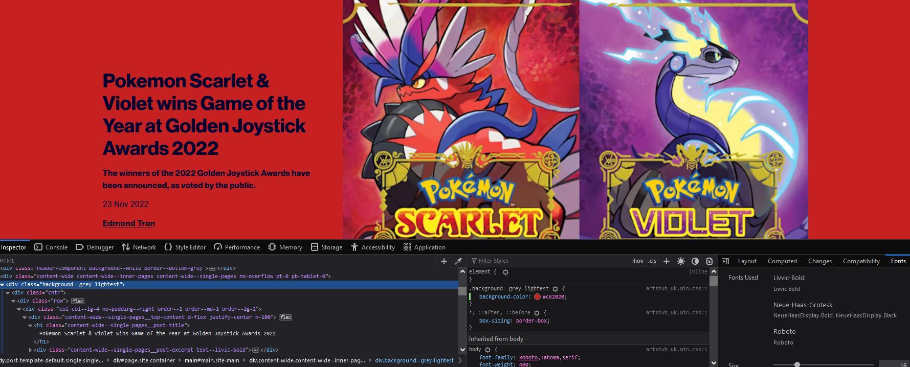
Looking good. But wait a sec, that’s not fair to Violet, which is just as much a winner as Scarlet. Can we instead do a gradient background? One which transitions from Scarlet to Violet?
Sure, we can just need a website to help us. Check out this CSS Gradient tool
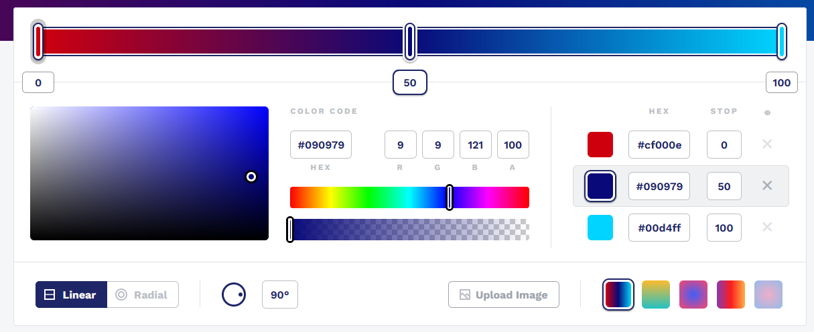
Let’s remove the middle color so we only have two colors in our gradient, one on each end:
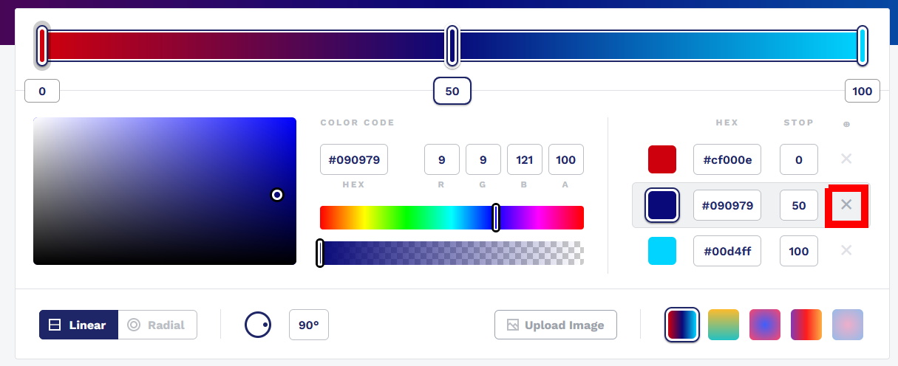
And then lets set one side to a nice scarlet color, and the other to a violet color. I think this looks not bad…
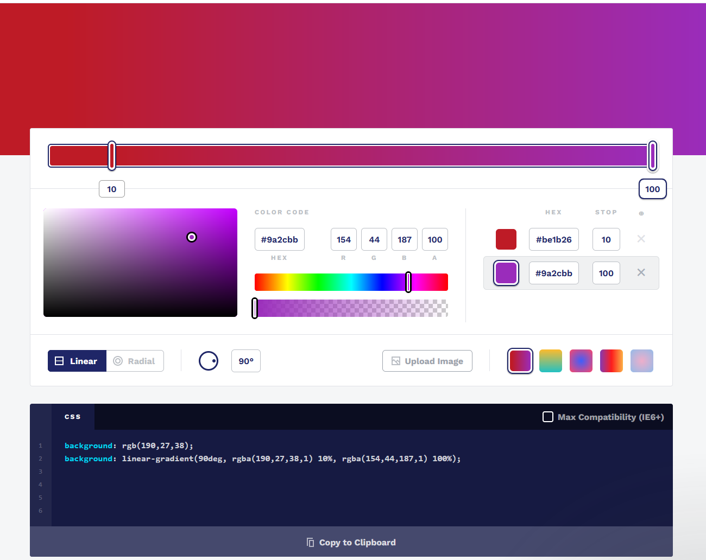
Now we just need to copy those styles into our CSS element, replacing the background-color part. We can also remove the old background color to turn it off:
background: rgb(190,27,38);
background: linear-gradient(90deg, rgba(190,27,38,1) 10%, rgba(154,44,187,1) 100%);
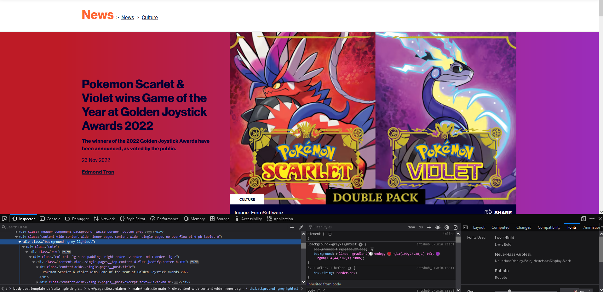
Arguably, with this new background, our text is a bit less readable. Can you figure out how to make the text white? Hint - CSS styles inherit, so you may need to scroll down a bit to see which property to set.
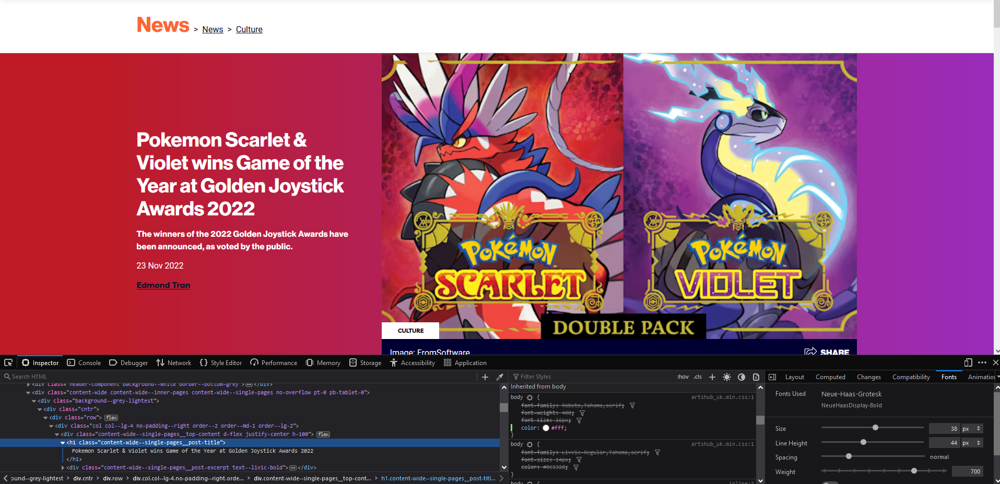
The third component that servers may send to your browser is JavaScript. JavaScript enables your website to have some client-side interactivity, which may include animations, carousels, math computations and other dynamic updates. In our house building analogy, JavaScript is like the electricity and plumbing.
You can run JavaScript comments live in your browser by clicking on the Console tab:

Let’s start by giving an annoying alert message to the user:
alert("Nothing on this site has been altered! Promise!")
Type this into the console and hit enter. A message box will pop up:
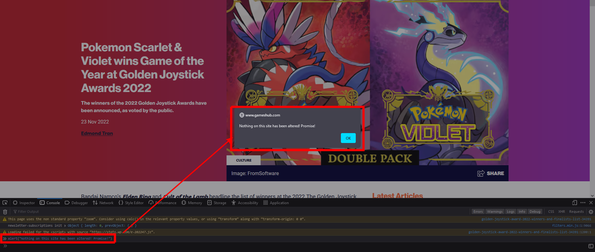
There is so much you can do with JavaScript. Why don’t we simply write a script so that when you click on the image, it swaps to a different image?
As this script is going to take a few lines of code, let’s switch to snippet mode:
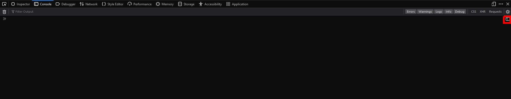
Paste in the following snippet:
// find the header image
const image = document.querySelector(".attachment-large.size-large.jetpack-lazy-image.jetpack-lazy-image--handled");
var imageNumber = 1;
// when we click on the header image
image.addEventListener( "click", () => {
// if we are in the first image
if (imageNumber === 1) {
// swap to the second image
image.src = "https://i.kinja-img.com/gawker-media/image/upload/c_fit,f_auto,g_center,pg_1,q_60,w_965/aa78d09caf97fc19e1ff92a893e449c1.jpg"
image.srcset = "https://i.kinja-img.com/gawker-media/image/upload/c_fit,f_auto,g_center,pg_1,q_60,w_965/aa78d09caf97fc19e1ff92a893e449c1.jpg"
imageNumber = 2;
} else {
// else swap back
image.src = "https://assets.nintendo.com/image/upload/ar_16:9,b_auto:border,c_lpad/b_white/f_auto/q_auto/dpr_1.0/c_scale,w_700/ncom/en_CA/dlc/switch-dlc/pokemon-violet-dlc/rom-bundle/pokemon-scarlet-and-pokemon-violet-double-pack/image"
image.srcset = "https://assets.nintendo.com/image/upload/ar_16:9,b_auto:border,c_lpad/b_white/f_auto/q_auto/dpr_1.0/c_scale,w_700/ncom/en_CA/dlc/switch-dlc/pokemon-violet-dlc/rom-bundle/pokemon-scarlet-and-pokemon-violet-double-pack/image"
imageNumber = 1;
}
});
And run the snippet

If it worked correctly, when you click on the image, it should change!
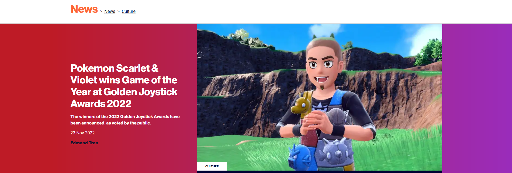
And if you click again, it will change back!
Can you figure out the logic to swap between 3 different images?
Recall from the introduction, when you browse to a website, the Browser requests the content from the server. This will return a new, unmodified version of the site. All of the changes you made were on your local computer, so none of these changes will be saved, and the server will return the original data without any tampering!